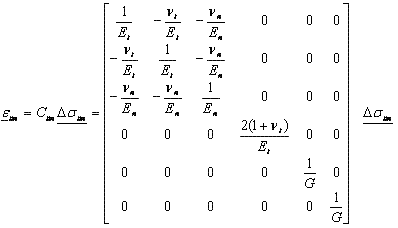
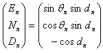
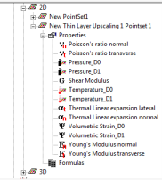
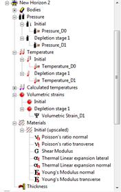

A special anisotropic material model combines a transverse anisotropic material model with anisotropy by upscaling thin (elastic) layers. One can be used without the other. One can be used without the other.
Geomec allows the input of transverse isotropic material parameters, which can be combined with fracture anisotropy. A transverse anisotropic material is frequently observed in nature and usually is the upscaled effect of fine lamination (bedding) resulting from the early marine material deposition. The stiffness parameters in normal direction (En, nn) to the lamination differ from the in-plane or transverse (Et, nt) stiffness parameters. The normal Poisson’s ratio is the portion (ratio) of absorbed normal strain that gets transferred to orthogonal (transverse) directions. The compliance matrix can be written as follows:

The Shear Modulus G does not follow directly from the Young’s moduli and Poisson’s ratios. It can be derived from upscaling routines, where upscaled layer thicknesses are part of the equation. Its value ranges from close to zero (high Poisson’s ratios and low Young’s moduli) to En/[2(1+nn)]. Numerically, it can be any positive value.
The user needs to define the dip and azimuth of the bedding plane. The dip is the deviation from horizontal of the bedding plane in degrees. A dip of 90 degrees would mean a vertical plane. The azimuth of the dip is defined here as the rotation (clockwise from Northing) of the direction of steepest descent, the direction where a ball would roll on a flat service. These definitions align with the PETREL definitions.
In case of overturned formations, where the bottom is up, the user can select or import a dip greater than 90 degrees. A 10 degrees dip with azimuth 90 degrees coincides numerically with a 170 (=180-10) degrees dip and a –90 (or 270 = 90+180) degrees azimuth.
The user might import a pointset with dip and azimuths to perform a proper matrix rotation. Be aware that another definition exists in geological literature, where the azimuth is defined as the iso-depth or strike direction, which is 90 degrees rotated from the dip-azimuth
The relation between the dip (dn) and azimuth (qn) of a layer and its normal vector, is given by:

Note the difference in minus sign for the Depth coordinate, with the fracture densities, which arises from conventions on the direction of the positive vertical.
After upscaling, a 2D pointset with upscaled material parameters, pressures, temperatures and correction strains is obtained. These can be imported and assigned to Formations in an upscaled model (mesh). The constitutive model for the upscaled formation should be “ upscaled anisotropy”.
When applying the 2D-pointset to a Formation, all elastic parameters in the material model get overwritten. The choice of elastic parameters in the Material Model in the Data Storage section is irrelevant in this case. The defaults of a new material model can be kept unaltered. What needs to be modified in the Material Model (unless also available as a pointset) are parameters like density, Kh-KH ratios and the average dip and azimuth of layers. The dip and azimuth of the layers can be entered as a 2D pointset (for instance extracted from Petrel), for instance extracted from a representative surface (top, bottom or intermediate surface).

